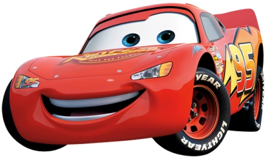

<ion-content>
  <div class="fondo" *ngIf="template == 1">
    <h1 class="titulo">
      Solicitudes de viajes
    </h1>

    <ion-list lines="none" id="lista" *ngFor="let aux of solicitud; let i = index" [attr.data-index]="i">
      <ion-item class="item" *ngIf="solicitud != 'n' && solicitud != 'i' && solicitud != 's' ">


        <ion-grid>
          <ion-row class="chato">
            <ion-col size="6" class="ion-align-self-start">
              <div>
                
              </div>
            </ion-col>
            <ion-col size="6" class="Fuentes">
              <div>
                <div class="rutPas"><b>Rut</b>: {{solicitud[i]}}</div>
                <div class="buttonsOptions">
                  <ion-button (click)="eliminarPasajeros(solicitud[i],usuario.rut)">
                    <ion-icon name="trash"></ion-icon>
                  </ion-button>
                  <ion-button (click)="cambiarChat(solicitud[i],usuario.rut)">
                    <ion-icon name="chatbubbles-outline"></ion-icon>
                  </ion-button>
                </div>

              </div>
            </ion-col>
          </ion-row>
        </ion-grid>
      </ion-item>
    </ion-list>

    <div>
      <ion-button (click)="iniciarViaje()">
        Iniciar
        <ion-icon name="car" slot="end"></ion-icon>
      </ion-button>
      <ion-button (click)="finalizarViaje(4)">
        Cancelar
        <ion-icon name="nuclear" slot="end"></ion-icon>
      </ion-button>
      <ion-button (click)="generarQr()">
        Mostrar QR
        <ion-icon name="qr-code-outline"></ion-icon>
      </ion-button>
    </div>
  </div>
  <div class="fondo-recorrido" *ngIf="template == 2">
    <div id="map">
    </div>
    <ion-button (click)="finalizarViaje(3)">
      Finalizar
    </ion-button>
  </div>
  <div class="fondo-finalizado" *ngIf="template == 3">
    
  </div>
  <div class="fondo-finalizado" *ngIf="template == 4">
    
  </div>
  <div class="fondo-qr" *ngIf="template ==5">
    <div class="qr">
      <ngx-qrcode [elementType]="elementType" [value]="value_qr">
      </ngx-qrcode>
    </div>
    <div class="volver">
      <p>{{mostrar_qr}}</p>
      <ion-button (click)="volverMenu()">
        Volver
      </ion-button>
    </div>

  </div>


  <div class="fondo-chat" *ngIf="template == 6">
    <h1>Resuelve tus dudas</h1>
    <div class="sepLista">
      <div *ngIf="losMensajes != undefined" class="mensajesListas">
        <div *ngFor="let aux of losMensajes; let i = index" [attr.data-index]="i" class="mensajesLista">
          <ion-row *ngIf="aux['rut']==emisorCond">
            <ion-col size="3" class="yoListaU">
              {{aux['rut']}} :
            </ion-col>
            <ion-col size="9" class="yoLista">
              {{aux['message']}}
            </ion-col>
          </ion-row>
          <ion-row *ngIf="aux['rut']==receptorPas">
            <ion-col size="9" class="tuListaU">
              {{aux['message']}}
            </ion-col>
            <ion-col size="3" class="tuLista">
              : {{aux['rut']}}
            </ion-col>
          </ion-row>
        </div>
      </div>
      <div class="formularioChat">
        <form [formGroup]="mensaje" (ngSubmit)="enviarMensaje()">
          <ion-item>
            <ion-label>Mensaje: </ion-label>
            <ion-input type="text" placeholder="..." formControlName="message"></ion-input>
          </ion-item>

          <ion-button type="button" (click)="volverMenu()">
            <ion-icon name="chevron-back-circle-outline"></ion-icon>
          </ion-button>
          <ion-button type="button" (click)="recargar()">
            <ion-icon name="refresh-circle-outline"></ion-icon>
          </ion-button>
          <ion-button type="submit">
            <ion-icon name="chevron-forward-circle-outline"></ion-icon>
          </ion-button>

        </form>
      </div>
    </div>
  </div>
</ion-content>
